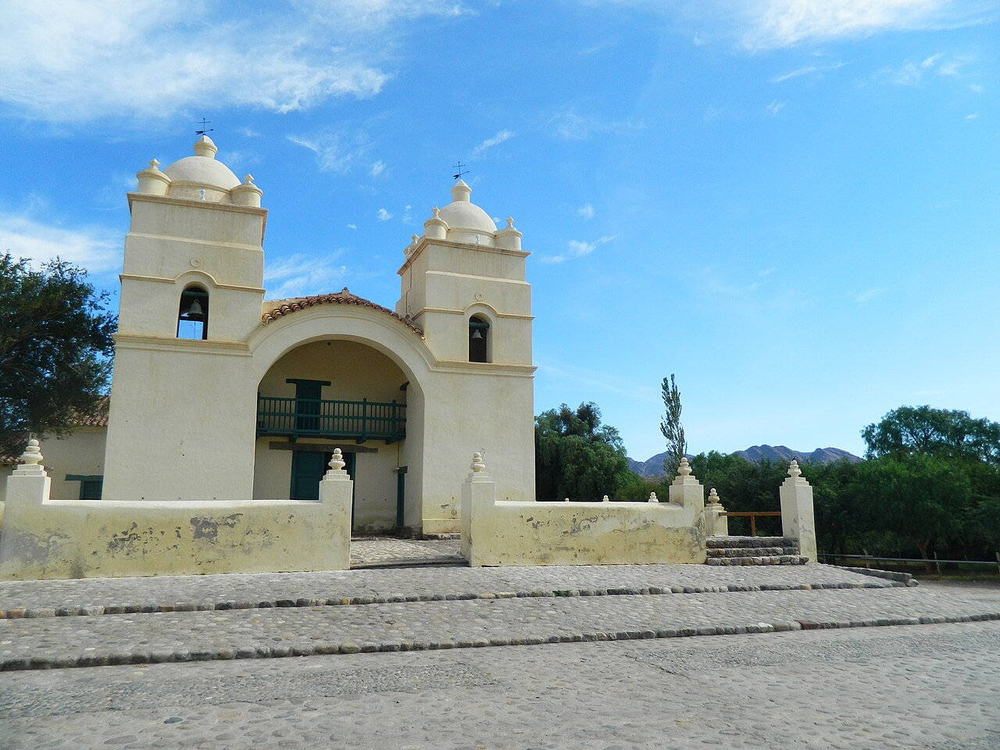
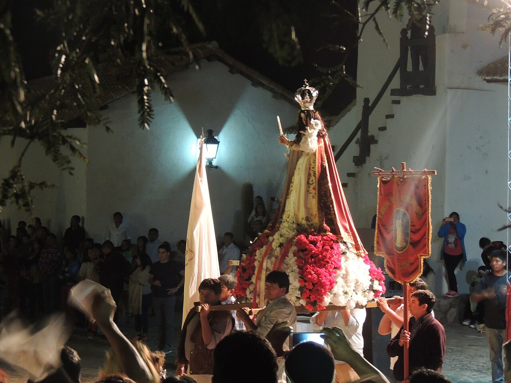
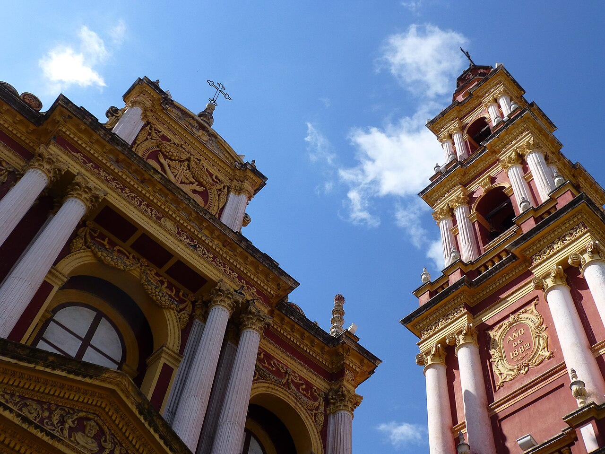
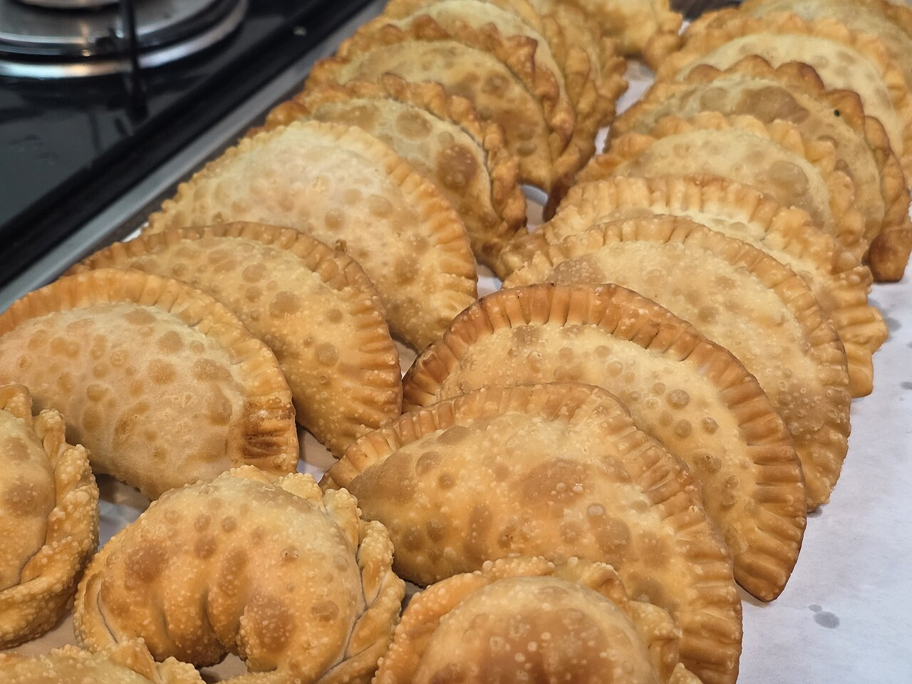
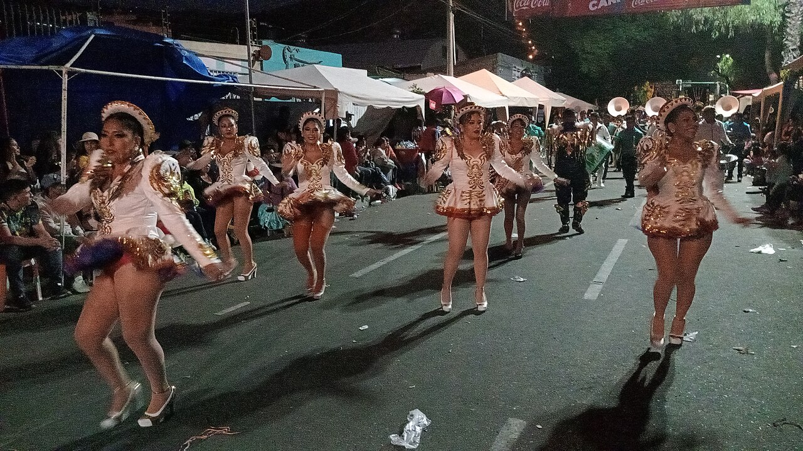

Enero – Febrero
Corsos Color
Festival con más de 40 años de historia; reúne agrupaciones de localidades vecinas y de distintas partes del país.
Revista Cultural · Salta · Argentina
Tradiciones y costumbres de San Ramón de la Nueva Orán: fe, identidad, folclore y carnaval — el patrimonio vivo del norte argentino.
Entrar a las raíces ↓
San Ramón de la Nueva Orán fue fundada el 31 de agosto de 1794 por el español Ramón García de León y Pizarro, gobernador de Salta del Tucumán. La bautizó así porque esa fecha es el día de San Ramón Nonato y porque él mismo había nacido en la ciudad argelina de Orán.
Fue concebida como una ciudad estratégica de frontera: debía proteger el camino hacia el Alto Perú y contener el avance desde el Chaco. Ese origen militar y misional dejó una marca profunda en su religiosidad y en su vida comunitaria.
Cabecera del departamento Orán, en el extremo norte de Salta, hoy es el segundo mayor centro urbano de la provincia, con alrededor de 87.000 habitantes (censo 2022). Su pasado colonial, la cercanía con Bolivia y el entorno de las Yungas moldearon una identidad mestiza única, donde conviven lo criollo, lo andino y lo originario.
Cada 31 de agosto, Orán celebra a la vez el cumpleaños de la ciudad y la fiesta de su santo patrono.

Las Fiestas Patronales de San Ramón de la Nueva Orán constituyen la celebración religiosa, cultural y social más importante de la ciudad. Se realizan cada año durante agosto y culminan el 31 de agosto, fecha en que se conmemora la fundación de la ciudad y la festividad de su santo patrono, San Ramón Nonato.
Durante varias semanas se desarrollan la novena, peregrinaciones, misas, procesiones y encuentros comunitarios. Miles de fieles participan de la tradicional procesión por las calles, manifestando su fe y devoción.
«Un acontecimiento que reúne a toda la comunidad y atrae visitantes de distintos puntos de Salta y Bolivia.»
También incluyen festivales musicales, ferias de artesanos, exposiciones y desfiles cívicos, militares y gauchos.
La religiosidad popular ocupa un lugar central en la vida de los oranenses. Además de las fiestas patronales, se celebran numerosas festividades del calendario católico:
Estas manifestaciones reflejan la profunda fe de la comunidad y fortalecen los lazos sociales. La participación de familias, instituciones educativas, centros vecinales y agrupaciones gauchas es una característica distintiva.
La devoción mariana es especialmente intensa: cada barrio honra a su virgen o santo con novenas, serenatas y procesiones, en las que la imagen recorre las calles entre flores, velas y bandas de música.

Junto al calendario católico late una espiritualidad más antigua, heredada de los pueblos andinos: el respeto sagrado por la tierra y por la naturaleza de las Yungas.

Cada 1° de agosto se celebra el día de la Pachamama, la “madre tierra”. Las familias cavan un pozo —la apacheta— y le ofrendan comida, bebida, hojas de coca y cigarrillos, en agradecimiento por las cosechas y pidiendo protección para el año que comienza.
A esta raíz andina se suman leyendas del monte que aún se cuentan en los parajes rurales: el Familiar, el Coquena —protector de las vicuñas y los rebaños— o la Telesita, que se recuerda con bailes y promesas. Relatos que enseñan a respetar la selva, el agua y los animales.
En el norte, la fe católica y las creencias originarias no compiten: se entrelazan en una misma manera de habitar el mundo.
El folclore es una de las expresiones más representativas de Orán: canciones del trabajo rural, la vida en el monte y el amor por la tierra, transmitidas de generación en generación.
El Festi Orán reúne artistas locales, provinciales y nacionales, consolidándose como uno de los festivales folclóricos más destacados de Salta.
Estos instrumentos acompañan danzas y canciones tradicionales, aportando sonidos que forman parte de la identidad cultural de la región.
La cocina de Orán es herencia de la fusión criolla, andina y de monte. En las mesas y en las ferias de las fiestas no faltan platos que se preparan, muchas veces, a leña y en grandes ollas para compartir:
A esto se suman los frutos de las Yungas y de las chacras de la región —cítricos, mango, banana y caña de azúcar— que dan a Orán una identidad gastronómica tropical poco común en el resto del país.


El trabajo artesanal mantiene vivos saberes transmitidos de generación en generación. En los talleres familiares y en las ferias de las fiestas se ofrecen piezas únicas, cada una con la huella de su autor:
Cada poncho y cada vasija guardan horas de trabajo paciente: la artesanía es memoria que se puede tocar.
Numerosas instituciones preservan y difunden las tradiciones locales, formando a niños, jóvenes y adultos en el patrimonio oranense.

A lo largo del año, Orán despliega un calendario propio que combina fe, identidad y encuentro comunitario. Casi todo con entrada gratuita.
Enero – Febrero
Festival con más de 40 años de historia; reúne agrupaciones de localidades vecinas y de distintas partes del país.
Abril
Galas artísticas, talleres y stands de emprendedores, gastronómicos y artesanos.
Acto el 19 de abril en Plaza Santa Marta y feria popular el día 20.
Julio
Convocan a jóvenes de toda la diócesis de Orán en honor a la Virgen María.
Encuentro interamericano de danza con cuerpos de baile del departamento.
Agosto
Ofrendas a la tierra madre en la apacheta; reúne a las comunidades originarias.
El 30, “Festi Plaza”; el 31, desfile y procesión de San Ramón Nonato. Festi Orán y Fiesta de las Colectividades.
Agosto – Septiembre
Concurso de alumnos del último año del secundario en torno a una temática anual.
Noviembre
En Plaza San Martín, con academias locales y más de 30 emprendedores.

La cultura de San Ramón de la Nueva Orán es el resultado de la fusión entre las tradiciones indígenas, criollas, españolas y andinas. Esta riqueza se manifiesta en sus festividades, música, gastronomía, danzas y expresiones religiosas, convirtiendo a Orán en uno de los centros culturales más importantes del norte argentino.
En el departamento Orán conviven, hasta hoy, comunidades de pueblos originarios —kollas, guaraníes (ava guaraní) y wichís—, cuya lengua, espiritualidad y saberes sobre el monte siguen alimentando la identidad de toda la región.
Su identidad se fortalece a través de la fe, la solidaridad, el sentido de pertenencia y el orgullo por sus raíces, que continúan transmitiéndose de generación en generación.